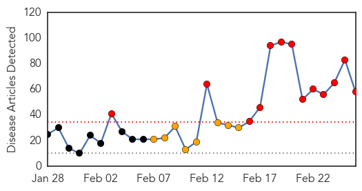
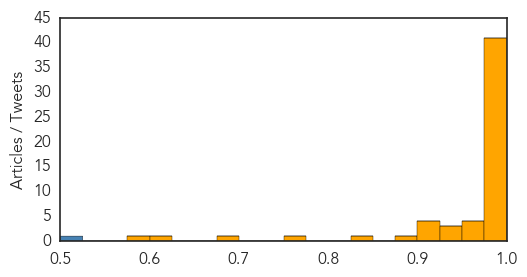
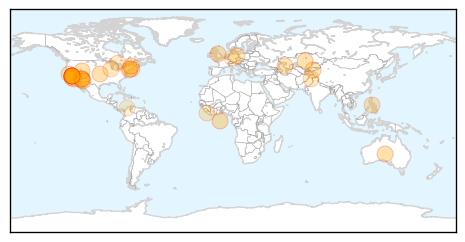

Swine Flu
30-Day Web Trend
13 alerts, 8 warnings

30-Day Twitter Trend
2 alerts, 0 warnings

Article Locations

Article Confidences
Top Articles:
- 1.000
- Swine flu: what is the H1N1 virus and how is it spread?
- 1.000
- Tehelka - Investigations, Latest News, Politics, Analysis, Blogs, Culture, Photos, Videos, Podcasts
- 1.000
- India urges calm on swine flu
- 1.000
- India’s Health Minister Pleads With Citizens To Remain Calm Amidst Swine Flu Outbreak
- 1.000
- Expert suggests new strains behind deaths, calls for virus studies
- 1.000
- 13 people infected with swine flu virus
- 1.000
- The Kathmandu Post
- 1.000
- Modern day plague: Swine flu deaths pass 800 in India
- 1.000
- Total swine flu cases reach 13 across the country
- 1.000
- ‘Isolation wards a must at new hospitals’
- 0.999
- Swine flu Death toll Reaches 242
- 0.999
- Resistant strain of swine flu feared; virus killing thousands in India
- 0.999
- Swine Flu Surge in India Fuels Concern About Resistant Strains
- 0.998
- Health experts say taking flu shots can reduce H1N1 risk
- 0.998
- Jammu doctor dies of swine flu in Delhi
- 0.998
- 449 swine flu cases in UP, toll reaches 12
- 0.998
- 33 new cases of swine flu in Telangana
- 0.998
- NBMCH doctors treating swine flu patients fall sick
- 0.997
- Swine flu in Maharashtra: 112 deaths so far, 166 new cases reported
- 0.997
- swine flu patients
- 0.997
- Govt Says ‘Don't Panic' As Swine Flu Death Toll Reaches 926
- 0.997
- Govt finds 18 H1N1 clusters in Chennai
- 0.996
- Swine flu claims 51 more lives; death toll reaches 926, over 16,000 affected
- 0.995
- HC to govt: Make medicines, masks available to people
- 0.994
- High Court asks Government for its swine flu strategy
- 0.993
- Scientist Calls For Developing Universal Swine Flu Vaccine
- 0.993
- 76-year-old dies of swine flu
- 0.993
- Swine flu outbreak in India kills 900 and infects 16,000 26/02/2015
- 0.991
- Swine Flu Deaths Crosses 250 Mark In Rajasthan
- 0.991
- Swine flu: Nine affected in Bihar
- 0.991
- Swine flu: Four affected in Nagaland
- 0.990
- Swine flu fears cause Indian city of Ahmedabad to ban public gatherings
- 0.990
- Swine flu deaths crosses 250 mark in Rajasthan
- 0.989
- Nadda: Govt 'serious' about taming swine flu, unwanted panic created by reports
- 0.988
- Jammu doc dies of suspected H1N1
- 0.987
- No scarcity of swine flu medicine, says health minister
- 0.986
- Government serious in dealing with swine flu situation: Health Minister
- 0.985
- Swine flu toll rises in Nepal
- 0.984
- High Courts ask central, state government for swine flu strategy
- 0.983
- Expert team to assess swine flu situation in Kashmir
- 0.981
- Court pulls up Centre, State on steps taken to control swine flu
- 0.972
- Swine Flu scare notwithstanding, Vibrant Kutch Summit begins today
- 0.969
- Health Department Worried About Spread of Flu
- 0.965
- Indian city bans public gatherings over swine flu fears
- 0.965
- Swine flu claims youngest victim in City
- 0.937
- 2 more die of H1N1, 83 test positive; need to look at infection afresh, say doctors
- 0.933
- Swine flu in India: Centre recommends vaccination for healthcare workers
- 0.933
- Dotasar claims 1,000 deaths against govt. figure of 243 due to Swine Flu in Raj, demands resignation
- 0.925
- 2 more H1N1 cases reported in city
- 0.923
- Thane witnesses three swine flu deaths in February
Showing top 50 articles...
Top Tweets:
- 0.821
- Vaccine Narratives and Public Health: Investigating Criticisms of H1N1 Pandemic Vaccination http://t.co/gngXqTqRQl
- 0.583
- 6 years after the H1N1 pandemic, virus STILL hasn't drifted enough to require an update for next winter's flu shot. http://t.co/IHuX01qwQz
Measles
30-Day Web Trend
10 alerts, 5 warnings

30-Day Twitter Trend
5 alerts, 0 warnings

Article Locations
Article Confidences

Top Articles:
- 0.998
- California Reports No New Measles Cases Since Last Update
- 0.988
- Measles expert explains vaccine safety, virus risks
- 0.985
- Doctors worry measles outbreak will reach Connecticut
- 0.976
- Doctors Express directors weigh in on measles vaccine
- 0.976
- WHO calls for vaccinations against European measles epidemic
- 0.968
- Officials: Measles outbreak in state is over, cost $115,000 to manage
- 0.962
- Measles Resurfaces in Europe – WHO Calls for Widespread Vaccination
- 0.954
- Herd immunity and the vaccine personal belief exemption
- 0.952
- Why One Family With Measles Is Reconsidering Their Anti-Vax Position
- 0.952
- UN health agency taken aback as measles resurfaces in Europe calls for widespread vaccination
- 0.951
- UN health agency 'taken aback' as measles resurfaces in Europe, calls for widespread vaccination
- 0.947
- WHO calls for more measles vaccination in Europe
- 0.932
- Is measles' return the 'new normal'? - WLTZ 38
- 0.916
- Kazakhstan Suspends Measles Vaccination Campaign After Many Students Fall Ill
- 0.909
- Leave well enough alone
- 0.900
- Disneyland Measles Outbreak Slows as Vaccine Bill Gains Steam
- 0.898
- Parents who don’t immunize their children
- 0.884
- WHO Alarmed Over Big Measles Outbreak, Seeks More Vaccination in Europe
- 0.881
- Kazakhstan Suspends Measles Vaccination Campaign After Many Students Fall Ill
- 0.873
- Visitors to Long Grove Menards may have been exposed to measles
- 0.868
- Up to 1,500 BART riders possibly exposed to measles by infected passenger
- 0.841
- Dana Hills High School
- 0.797
- Another reason to get your measles vaccine
- 0.784
- How the success of vaccines gave rise to anti-vaxxers
- 0.784
- Europe urged to step up vaccinations against measles
- 0.748
- Measles outbreak in Germany continues to spread
- 0.732
- Potential Measles Exposures Flare Up In Palatine Laundromat...
- 0.730
- In Perspective: Measles 2015
- 0.725
- WHO calls for more efforts to fight measles
- 0.708
- 70% Un-vaccinated children at Risk for Measles
- 0.686
- I-Team: Many Private Schools Are Vulnerable to Measles
- 0.681
- Untitled Article
- 0.597
- UN Health Agency Urges Europe to Step up Measles Vaccination
- 0.567
- Letters: Measles vaccine saves lives- Letters to the Editor: Orange County Register
- 0.563
- WHO Urges Europe, Central Asia To Step Up Measles Vaccination
- 0.526
- Mom: We weren't 'willy-nilly exposing people' to measles
- 0.524
- Kearny mom speaks out about measles
Top Tweets:
-
No tweets found for Feb 26, 2015